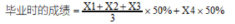

按国家要求，大学生每年都要去参加测试，测试数据由学校上报国家教育部，各项目均为必测项，体侧总分由各项目成绩按权重组成。
| 单项指标 | 权重% | 操作 |
|---|---|---|
| 体重指数(BMI) | 15 | 单项评分标准 |
| 肺活量 | 15 | 单项评分标准 |
| 50米跑 | 20 | 单项评分标准 |
| 坐体前屈 | 10 | 单项评分标准 |
| 立定跳远 | 10 | 单项评分标准 |
| 引体向上(男)/1分钟仰卧起坐(女) | 10 | 单项评分标准 |
| 1000米跑(男)/800米跑(女) | 20 | 单项评分标准 |
| 视力(裸眼、窜镜、屈光) | 不占分数 | 单项评分标准 |
| 等级 | 分数 |
|---|---|
| 优秀 | ≥90.0 |
| 良好 | 80.0~90.0 |
| 及格 | 60.0~79.9 |
| 不及格 | ≤59.9 |
学生成绩达到良好及以上者，方可参加评优与评奖；成绩达到优秀者，方可获体育学分。测试不及格者，本学年度准予补测一次，补测仍不及格，则学年成绩为不合格。
1、学年总分由标准分与附加分之和构成，满分为120分。
2、标准分由各单项指标得分与权重乘积之和组成，满分为100分。
3、附加分根据实测成绩确定，即对成绩超过100分的加分指标进行加分，满分为20分。
男生加分指标：引1体向上和1000米跑，各占10分；
女生加分指标：一分钟仰卧起坐和800米，各占10分。
学生毕业时的成绩和等级，按毕业当年总分的50%与其他学年总分平均得分的50%之和进行评定。
示例：x1、x2、×3分别代表大一到大三的体测总分，x4代表大四体测总分。

注：根据《国家学生体质健康标准》，毕业时的成绩达不到50分者按结业或肄业处理。